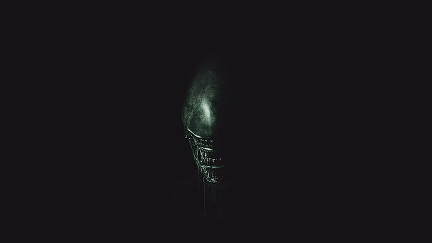
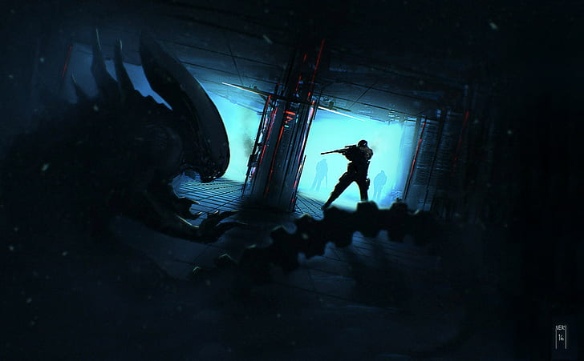
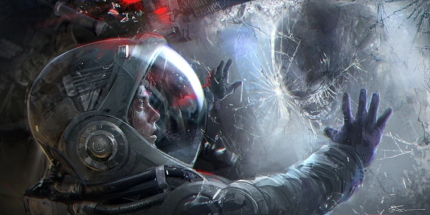

A Xenomorph emerging from the darkness. (wallpaperflare.com)
About This Site

A Xenomorph lurks in the shadows as a soldier aims down a brightly lit corridor. (wallpaperflare.com)
This site explores the Alien film franchise. The original film, directed by Ridley Scott, premiered in 1979 and follows the crew of the commercial spaceship Nostromo after they discover a deadly alien organism on the moon LV-426.
Since then, the series has grown to seven main films. I have enjoyed them because they blend science fiction with horror, and the Xenomorph remains one of the most striking creature designs in the genre.
My favorite film in the franchise is Aliens (1986), though I also enjoyed the 2025 series Alien: Earth. I am especially drawn to science fiction horror in which an alien creature is loose aboard a derelict ship or at a remote outpost.
What's on This Site
- The Xenomorph - the creature's biology, life cycle, and known variants
- Colonial Marines - the squad, weapons, and gear featured in Aliens
- Movie Timeline - every film and spin-off in order of release

An astronaut and a Xenomorph face each other through a shattered window. (wallpaperflare.com)
"You still don't know what you're dealing with, do you? Perfect organism." - Ash, Alien (1979)